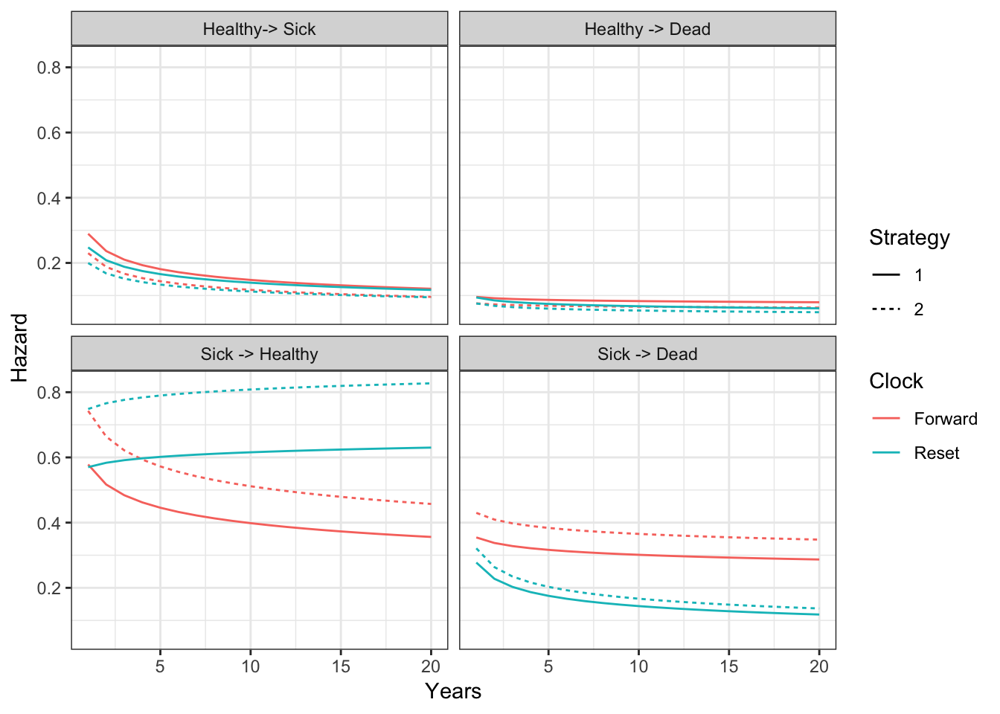
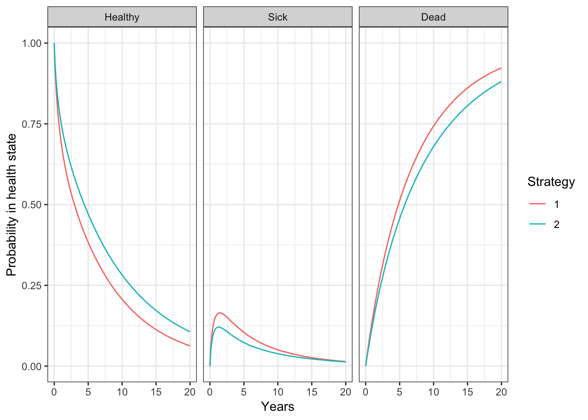
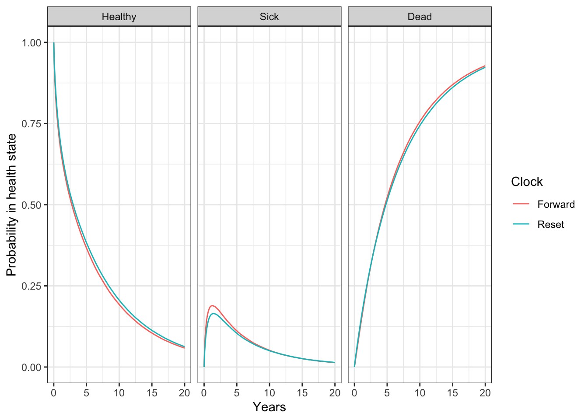
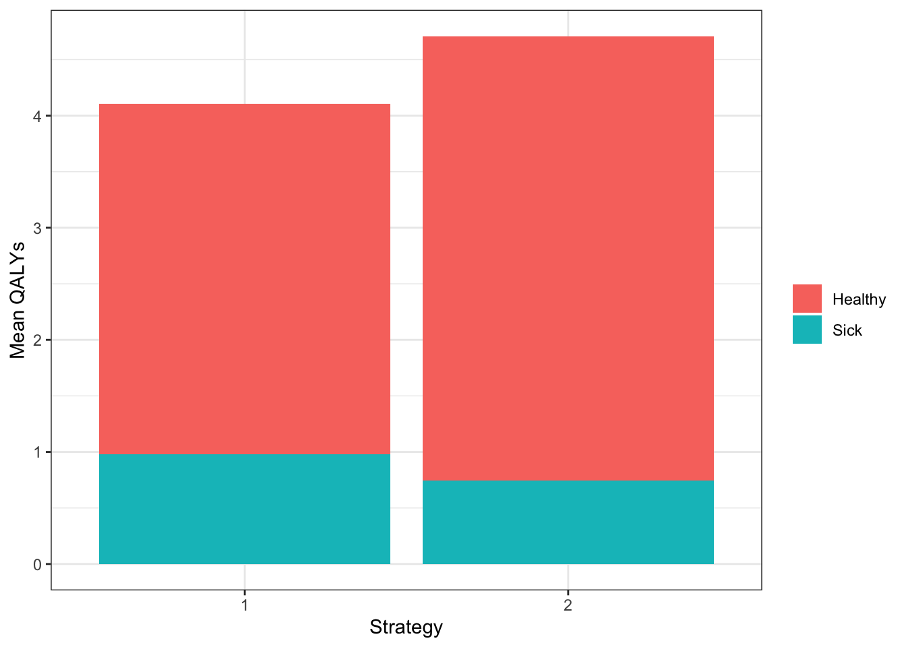
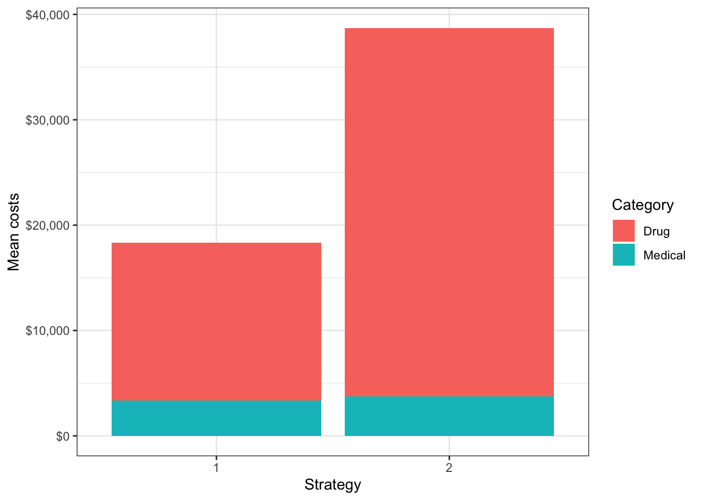

1 Overview
Continuous time state transition models (CTSTMs) simulate trajectories for patients between mutually exclusive health states. These models can be parameterized using multi-state models, which are generalizations of survival models with more than two states. Transitions between health states \(r\) and \(s\) for patient \(i\) with treatment \(k\) at time \(t\) are governed by hazard functions, \(\lambda_{rs}(t|x_{ik})\), that can depend on covariates \(x_{ik}\).
Different assumptions can be made about the time scales used to determine the hazards. In a “clock forward” (i.e., Markov) model, time \(t\) refers to time since entering the initial health state. Conversely, in a “clock reset” (i.e., semi-Markov) model, time \(t\) refers to time since entering the current state \(r\), meaning that time resets to 0 each time a patient enters a new state.
While state occupancy probabilities in “clock forward” models can be estimated analytically using the Aalen-Johansen estimator, state occupancy probabilities in “clock reset” models can only be computed in a general fashion using individual patient simulation. hesim provides support for individual-level CTSTMs (iCTSTMs) which can simulate either “clock forward” or “clock reset” models.
Discounted costs and quality-adjusted life-years (QALYs) are computed using the continuous time present value of a flow of state values—\(q_{hik}(t)\) for utility and \(c_{m, hik}(t)\) for the \(m\)th cost category—that depend on the health state of a patient on a given treatment strategy at a particular point in time. Discounted QALYs and costs given a model starting at time \(0\) with a time horizon of \(T\) are then given by,
\[ \begin{aligned} QALYs_{hik} &= \int_{0}^{T} q_{hik}(t)e^{-rt}dt, \\ Costs_{m, hik} &= \int_{0}^{T} c_{m, hik}(t)e^{-rt}dt, \end{aligned} \]
where \(r\) is the discount rate.
2 An example 3-state model
The reversible illness-death model is a commonly used state transition model (see figure below) with 3 health states and 4 transitions. In this example, we will use 3 generic health states: (1) Healthy, (2) Sick, and (3) Dead. The following 4 transitions are possible.
- Healthy to Sick
- Sick to Healthy
- Healthy to Dead
- Sick to Dead

In general, the transitions of a multi-state model can be characterized with an H x H transition matrix where \(H\) is the number of health states, which is a square-matrix where the (r,s) element is a positive integer if a transition from r to s is possible and NA otherwise. A 4 x 4 transition matrix is appropriate for the reversible illness death model.
tmat <- rbind(c(NA, 1, 2),
c(3, NA, 4),
c(NA, NA, NA))
colnames(tmat) <- rownames(tmat) <- c("Healthy", "Sick", "Dead")
print(tmat)## Healthy Sick Dead
## Healthy NA 1 2
## Sick 3 NA 4
## Dead NA NA NAIn a cost-effectiveness analysis, the treatments strategies of interest and characteristics of the target population must be specified in addition to the selected model structure. We will consider a simple case with two treatment strategies and a heterogeneous population of 1000 patients who differ by age and gender. The model contains 3 health states (2 of which are non-death states).
library("hesim")
library("data.table")
strategies <- data.table(strategy_id = c(1, 2))
n_patients <- 1000
patients <- data.table(patient_id = 1:n_patients,
age = rnorm(n_patients, mean = 45, sd = 7),
female = rbinom(n_patients, size = 1, prob = .51))
states <- data.table(state_id = c(1, 2),
state_name = c("Healthy", "Sick")) # Non-death health states
hesim_dat <- hesim_data(strategies = strategies,
patients = patients,
states = states)3 Parameter estimation
3.1 Multi-state model
CTSTMs can be parameterized by fitting statistical models in R or by storing the parameters from a model fit outside R as described in the introduction to hesim. Either a single joint model can be estimated encompassing all transitions or separate models can be estimated for each possible transition. In the introduction we considered a joint model; here, we will fit separate models. A number of parametric and flexibly parametric approaches are available (as described more detail in the params_surv() documentation), but we will illustrate with a generalized gamma model.
We will begin by fitting a “clock reset” model using flexsurvreg().
library("flexsurv")
n_trans <- max(tmat, na.rm = TRUE) # Number of transitions
wei_fits_cr <- vector(length = n_trans, mode = "list")
for (i in 1:length(wei_fits_cr)){
wei_fits_cr[[i]] <- flexsurv::flexsurvreg(Surv(years, status) ~ factor(strategy_id),
data = ctstm3_exdata$transitions,
subset = (trans == i) ,
dist = "weibull")
}
wei_fits_cr <- flexsurvreg_list(wei_fits_cr)“Clock forward” models are fit in a similar fashion by specifying both the starting (Tstop) and stopping (Tstop) times associated with each transition.
wei_fits_cf <- vector(length = n_trans, mode = "list")
for (i in 1:length(wei_fits_cf)){
wei_fits_cf[[i]] <- flexsurv::flexsurvreg(Surv(Tstart, Tstop, status) ~ factor(strategy_id),
data = ctstm3_exdata$transitions,
subset = (trans == i) ,
dist = "weibull")
}
wei_fits_cf <- flexsurvreg_list(wei_fits_cf)3.2 Utility and costs
The most straightforward way to assign utility and cost values to health states is with a stateval_tbl(). For example, we can specify the mean and standard error of utilities by health state (implying that utility values do not vary by treatment strategy or patient) and that we will use a beta distribution to randomly sample utility values for the probabilistic sensitivity analysis (PSA).
utility_tbl <- stateval_tbl(data.table(state_id = states$state_id,
mean = ctstm3_exdata$utility$mean,
se = ctstm3_exdata$utility$se),
dist = "beta",
hesim_data = hesim_dat)
head(utility_tbl)## state_id mean se
## 1: 1 0.65 0.1732051
## 2: 2 0.85 0.2000000Drug and medical costs can be specified in a similar fashion. Drug costs are assumed to known with certainty and vary by treatment strategy whereas medical costs are assumed to vary by health state and to follow a gamma distribution.
drugcost_tbl <- stateval_tbl(data.table(strategy_id = strategies$strategy_id,
est = ctstm3_exdata$costs$drugs$costs),
dist = "fixed",
hesim_data = hesim_dat)
medcost_tbl <- stateval_tbl(data.table(state_id = states$state_id,
mean = ctstm3_exdata$costs$medical$mean,
se = ctstm3_exdata$costs$medical$se),
dist = "gamma",
hesim_data = hesim_dat) 4 Simulation
4.1 Constructing the economic model
The economic model consists of a model for disease progression and models for assigning utility and cost values to health states. Since we are performing a PSA, we must specify the number of times to sample the parameters.
4.1.1 Disease model
We begin by constructing the model for health state transitions, which is a function of input data (i.e., covariates) and a fitted multi-state model (or a parameter object). When separate multi-state models are fit by transition, the input data consists of one observation for each treatment strategy and patient combination (joint models consist of one observation for each treatment strategy, patient, and transition combination). It can be created easily by using the expand() function to expand the hesim_data() object created above.
## strategy_id patient_id age female
## 1: 1 1 42.99424 1
## 2: 1 2 53.09797 1
## 3: 1 3 40.10619 0
## 4: 1 4 48.78555 1
## 5: 1 5 42.27326 0
## 6: 1 6 46.66693 0“Clock reset” and “clock forward” transition models are created by combining the fitted models and input data with the transition matrix, desired number of PSA samples, the timescale of the model, and the starting age of each patient in the simulation (by default, patients are assumed to live no longer than age 100 in the individual-level simulation).
transmod_cr <- create_IndivCtstmTrans(wei_fits_cr, transmod_data,
trans_mat = tmat, n = n_samples,
clock = "reset",
start_age = patients$age)
transmod_cf <- create_IndivCtstmTrans(wei_fits_cf, transmod_data,
trans_mat = tmat, n = n_samples,
clock = "forward",
start_age = patients$age)It is a good idea to evaluate the assumptions underlying multi-state models. hesim can help facilitate these analyses since hazards ($hazard()), cumulative hazards ($cumhazard()), and state probabilities ($stateprobs()) can be easily computed. As an illustration, we will predict hazards using the maximum likelihood estimates of the Weibull model for a single patient (patient_id = 1). To do so, we create new transition models based on a subset of the dataset transmod_data used above.
# Predict hazard
transmod_data_pat1 <- transmod_data[patient_id == 1]
predict_haz <- function(fits, clock){
transmod_cr_pat1 <- create_IndivCtstmTrans(fits, transmod_data_pat1,
trans_mat = tmat,
clock = clock,
point_estimate = TRUE)
haz <- transmod_cr_pat1$hazard(t = seq(0, 20, 1))
title_clock <- paste(toupper(substr(clock, 1, 1)),
substr(clock, 2, nchar(clock)), sep="")
haz[, clock := title_clock]
return(haz[, ])
}We then plot the predicted hazard by treatment strategy and timescale.
# Plot hazards
library("ggplot2")
haz <- rbind(predict_haz(wei_fits_cr, "reset"),
predict_haz(wei_fits_cf, "forward"))
haz[, trans_name := factor(trans,
levels = 1:4,
labels = c("Healthy-> Sick",
"Healthy -> Dead",
"Sick -> Healthy",
"Sick -> Dead"))]
ggplot(haz[t > 0],
aes(x = t, y = hazard, col = clock, linetype = factor(strategy_id))) +
geom_line() +
facet_wrap(~trans_name) +
xlab("Years") + ylab("Hazard") +
scale_linetype_discrete(name = "Strategy") +
scale_color_discrete(name = "Clock") + theme_bw()
While the hazards from the healthy state are similar between the “clock forward” and “clock reset” approaches, they differ significantly in the sick state. Treatment effects (i.e., the hazard ratios between treatment strategies 1 and 2) are also largest in the sick state.
Additional analyses should be conducted as well. For instance, the hazards for treatment strategy 1 (the reference treatment strategy) could be assessed by comparing the Weibull model’s predictions with predictions from non-parametric (i.e., the Kaplan-Meier estimator) or semi-parametric (i.e., Cox) models. This can be performed using mstate, which can predict cumulative hazards and state probabilities in non-parametric and semi-parametric models. Furthermore, the Weibull model’s proportional hazards assumption should be tested using standard techniques such as plots of log time vs. the log cumulative hazard, inclusion of time-dependent covariates, and tests of the Schoenfeld residuals.
4.1.2 Utility and cost models
Mean only models (see params_mean()) can be created directly from the utility and cost tables using since they do not include covariates and therefore do not require input data.
# Utility
utilitymod <- create_StateVals(utility_tbl, n = n_samples)
# Costs
drugcostmod <- create_StateVals(drugcost_tbl, n = n_samples)
medcostmod <- create_StateVals(medcost_tbl, n = n_samples)
costmods <- list(Drug = drugcostmod,
Medical = medcostmod)4.2 Simulating outcomes
4.2.1 Disease progression
Disease progression can be simulated using the $sim_disease() method. In the individual-level simulation, unique trajectories through the multi-state model are simulated for each patient, treatment strategy, and PSA sample. Patients transition from an old health state that was entered at time time_start to a new health state at time time_stop.
# "Clock reset"
econmod_cr$sim_disease()
head(econmod_cr$disprog_)## sample strategy_id patient_id grp_id from to final time_start time_stop
## 1: 1 1 1 1 1 2 0 0.000000 2.802059
## 2: 1 1 1 1 2 1 0 2.802059 3.652205
## 3: 1 1 1 1 1 2 0 3.652205 6.384110
## 4: 1 1 1 1 2 3 1 6.384110 6.432554
## 5: 1 1 2 1 1 3 1 0.000000 3.011220
## 6: 1 1 3 1 1 2 0 0.000000 1.134191State occupancy probabilities at different time points are computed using $sim_stateprobs(). First, we simulate state probabilities for the “clock reset” model.
econmod_cr$sim_stateprobs(t = seq(0, 20 , 1/12)) We can then compare state probabilities between the competing treatment strategies.
# Short funtion add create state name variable to data.tabale
add_state_name <- function(x){
x[, state_name := factor(state_id,
levels = 1:nrow(tmat),
labels = colnames(tmat))]
}
# Short function to create state probability "dataset" for plotting
summarize_stprobs <- function(stateprobs){
x <- stateprobs[, .(prob_mean = mean(prob)),
by = c("strategy_id", "state_id", "t")]
add_state_name(x)
}
# Plot of state probabilities
stprobs_cr <- summarize_stprobs(econmod_cr$stateprobs_)
ggplot(stprobs_cr, aes(x = t, y = prob_mean, col = factor(strategy_id))) +
geom_line() + facet_wrap(~state_name) +
xlab("Years") + ylab("Probability in health state") +
scale_color_discrete(name = "Strategy") +
theme(legend.position = "bottom") +
theme_bw()
Next, we compare the state probabilities from the “clock reset” and “clock forward” models.
econmod_cf$sim_stateprobs(t = seq(0, 20 , 1/12))
stprobs_cf <- summarize_stprobs(econmod_cf$stateprobs_)
# Compare "clock forward" and "clock reset" cases
stprobs <- rbind(data.table(stprobs_cf, clock = "Forward"),
data.table(stprobs_cr, clock = "Reset"))
ggplot(stprobs[strategy_id == 1],
aes(x = t, y = prob_mean, col = clock)) +
geom_line() + facet_wrap(~state_name) +
xlab("Years") + ylab("Probability in health state") +
scale_color_discrete(name = "Clock") +
theme(legend.position = "bottom") +
theme_bw()
The probabilities are generally quite similar, implying that the choice of timescale has a small impact on the results. This is not unexpected given that patients spend considerably more time in the healthy state and the predicted hazard rates are very similar in the healthy state.
4.2.2 QALYs
QALYs (and life-years) are simulated using $sim_qalys(). By default, mean QALYs are computed by treatment strategy, health state, and PSA sample (the by_patient option can be used to compute aggregated QALYs at the patient level). Here, we used the “clock reset” model to compute both undiscounted QALYs (dr = 0) and QALYs discounted at 3%.
## sample strategy_id grp_id state_id dr qalys lys
## 1: 1 1 1 1 0 5.527500 7.140362
## 2: 1 1 1 2 0 1.492378 1.504791
## 3: 1 2 1 1 0 6.004637 7.756721
## 4: 1 2 1 2 0 1.065668 1.074532
## 5: 2 1 1 1 0 4.211472 5.000822
## 6: 2 1 1 2 0 1.264154 1.267943We summarize the simulated QALYs by computing means by treatment strategy and health state across the PSA samples.
qalys_summary <- econmod_cr$qalys_[, .(mean = mean(qalys)),
by = c("strategy_id", "state_id", "dr")]
add_state_name(qalys_summary)
ggplot(qalys_summary[dr == .03],
aes(x = factor(strategy_id), y = mean, fill = state_name)) +
geom_bar(stat = "identity") +
scale_fill_discrete(name = "") +
xlab("Strategy") + ylab("Mean QALYs") +
theme_bw()
4.2.3 Costs
Costs are computed in the same way as QALYs, except that they are computed by category. We use the “clock reset” model and a 3% discount rate.
## sample strategy_id grp_id state_id dr category costs
## 1: 1 1 1 1 0.03 Drug 28252.958
## 2: 1 1 1 2 0.03 Drug 5874.589
## 3: 1 2 1 1 0.03 Drug 60946.900
## 4: 1 2 1 2 0.03 Drug 8539.356
## 5: 2 1 1 1 0.03 Drug 20968.461
## 6: 2 1 1 2 0.03 Drug 5286.622As with QALYs, we summarize costs by computing means (now by treatment strategy and category) across the PSA samples.
library("scales")
costs_summary <- econmod_cr$costs_[dr == .03 , .(mean = mean(costs)),
by = c("strategy_id", "category")]
ggplot(costs_summary,
aes(x = factor(strategy_id), y = mean, fill = category)) +
geom_bar(stat = "identity") +
scale_fill_discrete(name = "Category") +
scale_y_continuous(label = scales::dollar_format()) +
xlab("Strategy") + ylab("Mean costs") +
theme_bw()
5 Decision analysis
Once costs and QALYs are computed a cost-effectiveness analysis can be performed. The $summarize() method creates a “cost-effectiveness” object with mean costs and QALYs computed for each PSA sample. The icea() and icea_pw() can then be used for cost-effectiveness analysis as described here.